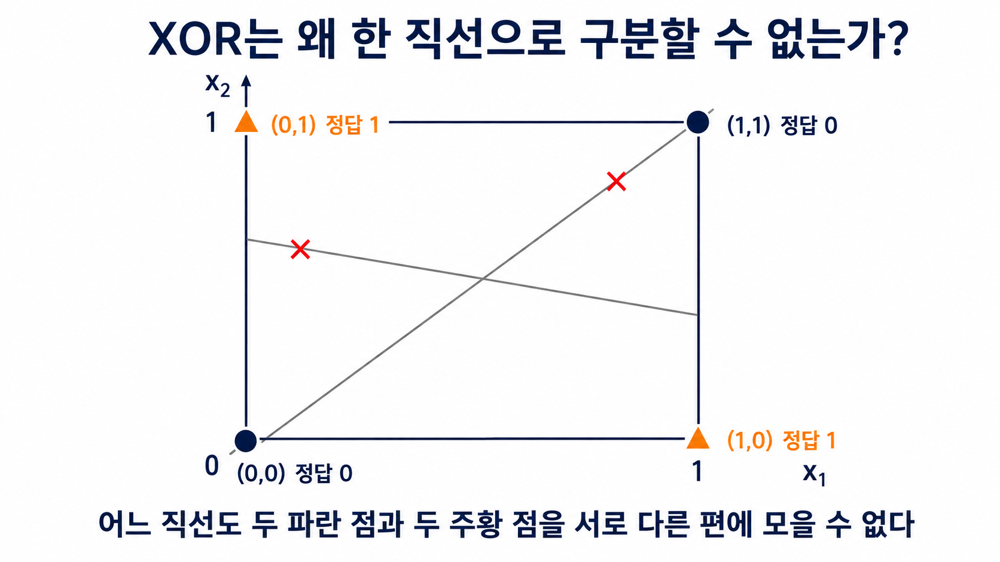

텍스트의 계산 표현
- 문자열을 토큰으로 나누고 각 토큰을 사전의 정수 주소인 토큰 ID로 바꾼다.
- BPE가 자주 붙는 이웃 기호를 병합해 사전 크기와 토큰 수를 절충하는 과정을 계산한다.
- 학습 코퍼스의 언어 구성이 언어별 토큰 분절과 문맥 비용을 바꾸는 이유를 비교한다.
WEEK 03 · FOUNDATIONS
문자열을 계산 가능한 벡터로 바꾸고, 오차를 따라 파라미터를 고치는 전체 흐름
02 · EXAMPLE
[40, 1842, 9552]의 출처I, love, AI라는 세 토큰으로 나눈다.| 토큰 조각 | 사전의 행 주소 |
|---|---|
I | 40 |
love | 1842 |
AI | 9552 |
03 · PROCESS
입력 문자열 : I love AI.
토큰화 결과 : ["I", " love", " AI", "."]
확인 : 4개 조각, 원래 순서 유지04 · PROCESS
␠는 눈에 안 보이는 앞 공백 한 칸을 뜻한다.love와 ␠love는 같은 글자열이어도 문장 속 위치가 달라 별도 토큰이 될 수 있다.?를 보존해야 다음 토큰 예측에서 평서문과 질문의 끝을 구분할 수 있다.위치 입력 표시한 토큰
문장 처음 "love" → ["love"]
앞 단어 뒤 " love" → ["␠love"]
문장 끝 "AI?" → ["AI", "?"]
※ ␠는 설명용 표시이며 실제 입력은 공백이다.05 · TABLE
| 토큰 | 토큰 ID |
|---|---|
I | 40 |
love | 1842 |
AI | 9552 |
06 · COMPARE
1842 > 40은 love가 I보다 중요하다는 뜻이 아니다.1842-40=1802도 두 토큰의 의미 거리가 아니다.E[40]은 I의 임베딩 행을 조회한다.E[1842]는 love의 임베딩 행을 조회한다.07 · COMPARE
play, played, playing을 모두 별도 항목으로 두면 공유하는 형태를 토큰 단계에서 활용하기 어렵다.play · played · playingplayful → [UNK]playroom → [UNK]play라는 공통 조각을 재사용하지 못하는 것이 단어 단위 방식의 한계다.08 · COMPARE
cats run의 쉬운 비교[cats][run]의 2개, 문자 단위는 공백까지 포함해 8개 토큰이다.T²에 비례해 늘어난다.[cats] [run][c][a][t][s][␠][r][u][n]09 · PROCESS
playing → [play] [ing]
lowest → [low] [est]10 · PROCESS
초기 기호 → 이웃 쌍 세기 → 최빈 쌍 병합 → 다시 세기 → 반복11 · EXAMPLE
</w>low, 다른 위치</w>는 바로 앞 글자가 단어의 마지막임을 표시한다.low에는 (w,</w>), lower에는 (w,e)가 생긴다.low와 더 이어지는 low...를 구분한다.l o w </w>l o w e r </w>l o wl o w e rl-o-w만 보면 끝인지 모름12 · TABLE
(e,s)는 newest 6회와 widest 3회를 더해 9회이다.(s,t)도 9회이고 (l,o)는 7회이므로 최댓값에는 동률이 있다.(e,s)를 골라 es로 치환한다.| 이웃 쌍 | 빈도 | 판정 |
|---|---|---|
(e,s) | 9 | 동률 규칙으로 선택 |
(s,t) | 9 | 다음 후보 |
(l,o) | 7 | 보류 |
13 · CALCULATION
e+s→es 다음의 선택newest와 widest의 모든 e s를 es로 바꾼 뒤 이웃 쌍을 다시 센다.(es,t)와 (t,</w>)가 각각 6+3=9회로 다시 동률이다.(es,t)를 선택한다.newest ×6 → n e w es t </w>
widest ×3 → w i d es t </w>| 다시 센 쌍 | 계산 | 빈도 |
|---|---|---|
(es,t) | 6+3 | 9 |
(t,</w>) | 6+3 | 9 |
(l,o) | 5+2 | 7 |
14 · PROCESS
lowest 인코딩l o w e s t </w>로 펼치고 학습 때 저장한 병합 규칙을 같은 순서로 적용한다.e+s→es, es+t→est이다.low est</w>까지 만들려면 뒤 라운드에서 l+o, lo+w, est+</w>도 학습했다는 전제가 필요하다.확인한 규칙: e+s → es, es+t → est
뒤 라운드 가정: l+o → lo, lo+w → low, est+</w> → est</w>
l o w e s t </w> → l o w es t </w> → l o w est </w>
→ lo w est </w> → low est </w> → low est</w>15 · COMPARE
l,o,w,…00~FF 256개16 · COMPARE
복원 → 토큰 수 → 실제 학습 성능 순서로 판정한다.안녕하세요[안녕][하세요]안녕하세요[안][녕][하][세][요]17 · TABLE
(V, d)이다.| 토큰 ID | 조회한 4차원 벡터 |
|---|---|
| 40 | [0.21, -0.11, 0.07, 0.33] |
| 1842 | [0.85, 0.62, -0.20, 0.10] |
| 9552 | [0.14, 0.77, 0.55, -0.05] |
18 · SHAPE
(B,T,d)를 왼쪽부터 읽기B는 한 번에 처리할 문장 수, T는 문장마다 맞춘 토큰 수이다.d는 토큰 하나를 나타내는 임베딩 숫자 좌표 수이다.(1,3)→(1,3,4)가 된다.I love AI 문장 한 개I · love · AI 세 토큰import torch
ids = torch.tensor([[40, 1842, 9552]]) # (1, 3)
emb = torch.nn.Embedding(10000, 4)
x = emb(ids)
print(ids.shape) # torch.Size([1, 3])
print(x.shape) # torch.Size([1, 3, 4])19 · PROCESS
작은 난수로 시작한 표에서 40, 1842, 9552의 세 행을 고른다.
조회한 벡터가 뒤 계산에 참여하고 예측 오차를 만든다.
손실의 기울기가 사용한 세 행으로 돌아와 그 벡터를 고친다.
20 · VISUAL
(0,0)과 (1,1)이다.(0,1)과 (1,0)이다.
21 · FORMULA
h=2x+1의 출력을 둘째 층 y=3h-4의 입력으로 넣는다.y=3(2x+1)-4=6x-1이 되어 다시 선형식 하나가 된다.22 · COMPARE
ReLU(z)=max(0,z)는 음수 구간을 0으로 막고 양수를 유지한다.ReLU(-2)=0, ReLU(3)=3으로 입력 구간마다 다른 규칙이 적용된다.Sigmoid(0)=0.5는 두 범주 사이의 중간 확률이다.23 · TABLE
z에서 함수 출력과 국소 기울기를 함께 보여 준다.z=0에서 0.25이지만 큰 절댓값에서는 기울기가 0에 가까워진다.| 함수·입력 | 출력 | 국소 기울기 | 역전파 효과 |
|---|---|---|---|
| Sigmoid(0) | 0.500 | 0.250 | 일부 전달 |
| Sigmoid(6) | 0.998 | 0.002 | 거의 차단 |
| ReLU(-2) | 0 | 0 | 차단 |
| ReLU(3) | 3 | 1 | 그대로 전달 |
24 · FORMULA
x와 첫 파라미터가 활성화 전 값 z₁을 만든다.σ가 z₁을 은닉 표현 h로 바꾼다.h와 둘째 파라미터가 최종 예측 ŷ을 만든다.25 · CALCULATION
x=1, 정답 y=2.1을 고정한다.w₁=0.5, b₁=0, w₂=-0.5, b₂=0.2에서 시작한다.26 · FORMULA
z₁=0.5, h=0.6225, ŷ=-0.1112, L=4.8895이다.27 · BACKPROP ①
L=(ŷ-y)²이며, 예측 ŷ가 바뀔 때 손실의 변화를 구한다.(u²)'=2u에 u=ŷ-y를 넣어 2(ŷ-y)가 된다.28 · BACKPROP ②
w₂로ŷ=w₂h+b₂에서 w₂가 1 변하면 예측은 h만큼 변한다.∂ŷ/∂w₂=h=0.622459이다.29 · BACKPROP ③
b₂로ŷ=w₂h+b₂에서 b₂는 그대로 한 번 더해진다.b₂가 1 변하면 예측도 1 변하므로 국소 미분은 ∂ŷ/∂b₂=1이다.30 · BACKPROP ④
h로ŷ=w₂h+b₂에서 h가 1 변하면 예측은 w₂만큼 변한다.∂ŷ/∂h=w₂=-0.5이다.h를 키우면 현재 손실도 커지는 방향이다.31 · BACKPROP ⑤
z₁로h=σ(z₁)의 국소 미분은 h(1-h)이다.h=0.622459를 넣으면 국소 변화율은 0.235004이다.32 · BACKPROP ⑥
z₁에서 w₁,b₁로z₁=w₁x+b₁에서 ∂z₁/∂w₁=x=1이다.∂z₁/∂b₁=1이다.0.519647에 각각 1을 곱해 두 파라미터의 책임을 얻는다.33 · FORMULA
η=0.1로 모든 파라미터에 θ←θ-η∂L/∂θ를 적용한다.w₁,b₁은 감소하고 음의 기울기인 w₂,b₂는 증가한다.34 · FORMULA
x=1을 사용해 z₁,h,ŷ을 다시 계산한다.0.507921을 같은 정답 2.1과 같은 제곱오차식에 넣는다.4.889537 → 2.534715로 감소했으므로 이번 갱신은 성공이다.35 · CODE
zero_grad → model → loss_fn은 이전 기울기를 비운 뒤 새 예측과 손실을 만든다. 현재 기본 설정에서는 .grad가 None이 된다.backward 뒤에는 각 파라미터의 .grad에 앞의 손계산과 같은 기울기가 채워진다.step 뒤에는 파라미터가 바뀌며, 다음 순전파에서 손실 감소를 별도로 확인한다.optimizer.zero_grad() # 이전 .grad 제거(기본: None)
y_hat = model(x) # 순전파 → 예측 생성
loss = loss_fn(y_hat, y) # 예측·정답 → 손실 생성
loss.backward() # .grad에 기울기 누적
optimizer.step() # 파라미터 갱신
# 확인: backward 뒤 grad 생성, step 뒤 파라미터 변화36 · COMPARE
Linear(2,4)는 두 입력을 네 개의 은닉 특성으로 바꾼다.ReLU를 빼면 두 선형층은 하나로 합쳐져 XOR을 분리할 수 없다.Linear(4,1) → Sigmoid는 은닉 특성을 범주 1의 확률로 바꾼다.0,1,1,0이어야 한다.37 · PROCESS
I love를 토큰 ID와 임베딩 벡터로 바꿔 신경망 블록에 입력한다.AI에 준 확률로 손실을 계산한다.입력 "I love" → 토큰 ID → 임베딩 → 신경망 → 다음 토큰 확률
↓ 정답 "AI"
임베딩 행 갱신 ← 파라미터 갱신 ← 역전파 ← 교차엔트로피 손실38 · PROCESS
I love AI는 토큰 세 개와 ID [40,1842,9552]로 바뀐다.(1,3,d)의 벡터 열을 만든다.문자열 I love AI
토큰·ID [I, ␠love, ␠AI] → [40, 1842, 9552]
임베딩 E[[40, 1842, 9552]] → shape (1, 3, d)
학습 결과 손실의 기울기 → 신경망 + 사용된 E의 행 갱신39 · COMPARE
40 · SUMMARY
(B,T)를 연속 벡터 모양 (B,T,d)로 바꾼다.